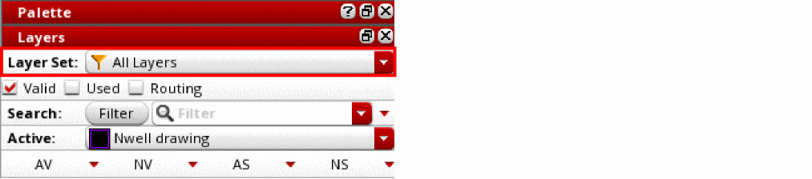

Layer Sets
A layer set is a subset of layer-purpose pairs. It lets you group layers according to your design requirements and work on a subset of layers. Using the Palette assistant, you can import, export, reload, save, and delete layer sets. You can set a layer set as active for the current design. When a layer set is active, all layers, objects, and grids associated with that layer set are displayed in the Palette.
In the Layers panel, the Layer Set toolbar lists all the layer sets available in the current design and displays the name of the one that is currently active. The All Layers layer set is a system-defined layer set. You can apply filters to this layer set, but you cannot add or remove layers from it.

Related Topics
Return to top